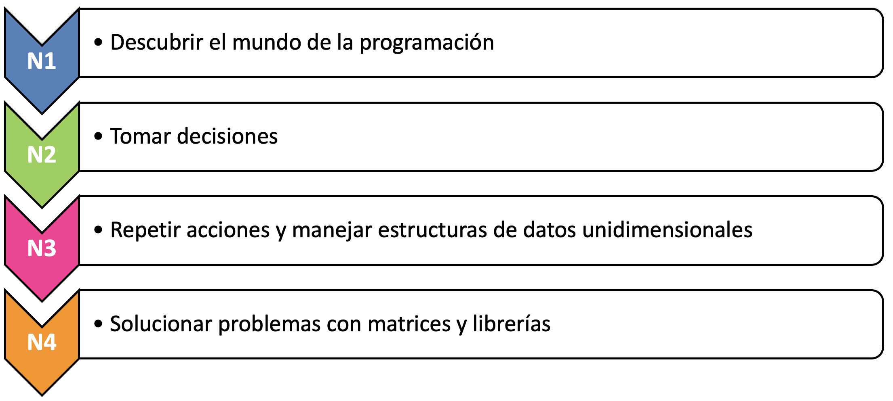

<!DOCTYPE html>
<html lang="en">
<head>
    <meta charset="utf-8" />
    <meta name="viewport" content="width=device-width, initial-scale=1.0, maximum-scale=1.0, user-scalable=no" />

    <title></title>
    <link rel="stylesheet" href="dist/reset.css">
    <link rel="stylesheet" href="dist/reveal.css" />
    <link rel="stylesheet" href="css/slides-extended.css" />
    <link rel="stylesheet" href="dist/theme/iph.css" id="theme" />
    <link rel="stylesheet" href="plugin/highlight/spyder.css" />
    <link rel="stylesheet" href="plugin/customcontrols/style.css">


    <script defer src="dist/fontawesome/all.min.js"></script>

    <script type="text/javascript">
        function pageInIframe() {
            return (window.location !== window.parent.location);
        }

        let forgetPop = true;
        function onPopState(event) {
            if(forgetPop){
                forgetPop = false;
            } else if( pageInIframe()) {
                parent.postMessage(event.target.location.href, "app://obsidian.md");
            }
        }
        window.onpopstate = onPopState;
        window.onmessage = event => {
            if(event.data == "reload"){
                window.document.location.reload();
            }
            forgetPop = true;
        }

        function fitElements() {
            const itemsToFit = document.getElementsByClassName('fitText');
            for (const item in itemsToFit) {
                if (Object.hasOwnProperty.call(itemsToFit, item)) {
                    const element = itemsToFit[item];
                    fitElement(element, 1, 1000);
                    element.classList.remove('fitText');
                }
            }
        }

        function fitElement(element, start, end) {

            let size = (end + start) / 2;
            element.style.fontSize = `${size}px`;

            if (Math.abs(start - end) < 1) {
                while (element.scrollHeight > element.offsetHeight) {
                    size--;
                    element.style.fontSize = `${size}px`;
                }
                return;
            }

            if (element.scrollHeight > element.offsetHeight) {
                fitElement(element, start, size);
            } else {
                fitElement(element, size, end);
            }
        }


        document.onreadystatechange = () => {
            fitElements();
            if (document.readyState === 'complete') {
                if (pageInIframe() && window.location.href.indexOf("?export") != -1){
                    parent.postMessage(event.target.location.href, "app://obsidian.md");
                }
                if (window.location.href.indexOf("print-pdf") != -1){
                    let stateCheck = setInterval(() => {
                        clearInterval(stateCheck);
                        window.print();
                    }, 250);
                }
            }
        };
    </script>
</head>

<body>
    <div class="reveal">
        <div class="slides"><section  data-markdown><script type="text/template"><!-- .slide: class="has-light-background drop" template="" data-background-color="#f8f8f8" -->
<div class="" style="position: absolute; left: 0px; top: 0px; height: 700px; width: 960px; min-height: 700px; display: flex; flex-direction: column; align-items: start; justify-content: center" absolute="true">

### IP Honores

 ####  *Introducción*

[Eduardo Rosales](mailto:ee.rosales24@uniandes.edu.co)

Departamento de Ingeniería de Sistemas y Computación

Universidad de los Andes
</div></script></section><section  data-markdown><script type="text/template"><!-- .slide: class="has-light-background drop" template="" data-background-color="#f8f8f8" -->
<div class="" style="position: absolute; left: 0px; top: 0px; height: 700px; width: 960px; min-height: 700px; display: flex; flex-direction: column; align-items: start; justify-content: center" absolute="true">

### Introducción a la Programación – IP

 - Primer curso de programación de las facultades de:
	 - Ingeniería
	 - Ciencias
	 - Economía
  
- IP en cifras: **TODO: Actualizar**
  - 42 secciones + **Honores**
  - 35 profesores
  - 1050 estudiantes
</div></script></section><section  data-markdown><script type="text/template"><!-- .slide: class="has-light-background drop" template="" data-background-color="#f8f8f8" -->
<div class="" style="position: absolute; left: 0px; top: 0px; height: 700px; width: 960px; min-height: 700px; display: flex; flex-direction: column; align-items: start; justify-content: center" absolute="true">

### IP Honores (1/3)

- Objetivo del curso
	- Aprender a programar un computador 
		- Para resolver problemas
</div></script></section><section  data-markdown><script type="text/template"><!-- .slide: class="has-light-background drop" template="" data-background-color="#f8f8f8" -->
<div class="" style="position: absolute; left: 0px; top: 0px; height: 700px; width: 960px; min-height: 700px; display: flex; flex-direction: column; align-items: start; justify-content: center" absolute="true">

### IP Honores (2/3)

- ¿Qué se aprende en el curso?
	- Usar la estrategia *Dividir y Conquistar*
    	- Simplificar problemas complejos
    		- En partes simples y manejables
	- Usar convenciones y buenas prácticas de programación
	- Crear algoritmos correctos y eficientes
	- Documentar, probar y depurar programas
</div></script></section><section  data-markdown><script type="text/template"><!-- .slide: class="has-light-background drop" template="" data-background-color="#f8f8f8" -->
<div class="" style="position: absolute; left: 0px; top: 0px; height: 700px; width: 960px; min-height: 700px; display: flex; flex-direction: column; align-items: start; justify-content: center" absolute="true">

### IP Honores (3/3)

- El curso se divide en cuatro niveles:


</div></script></section><section  data-markdown><script type="text/template"><!-- .slide: class="has-light-background drop" template="" data-background-color="#f8f8f8" -->
<div class="" style="position: absolute; left: 0px; top: 0px; height: 700px; width: 960px; min-height: 700px; display: flex; flex-direction: column; align-items: start; justify-content: center" absolute="true">

### Motivación

- La programación es una actividad **muy creativa y gratificante**
  - Enfocada principalmente en 
	  - Resolver problemas
      - Crear soluciones e **innovar**
	

</div></script></section><section  data-markdown><script type="text/template"><!-- .slide: class="has-light-background drop" template="" data-background-color="#f8f8f8" -->
<div class="" style="position: absolute; left: 0px; top: 0px; height: 700px; width: 960px; min-height: 700px; display: flex; flex-direction: column; align-items: start; justify-content: center" absolute="true">

*"Computer programming is an art... **A programmer who subconsciously views himself as an artist, will enjoy what he does and will do it better**."*  Donald Knuth
</div></script></section><section  data-markdown><script type="text/template"><!-- .slide: class="has-light-background drop" template="" data-background-color="#f8f8f8" -->
<div class="" style="position: absolute; left: 0px; top: 0px; height: 700px; width: 960px; min-height: 700px; display: flex; flex-direction: column; align-items: start; justify-content: center" absolute="true">

"*Everybody in this country should learn to program a computer, because it **teaches you how to think**"*. Steve Jobs
</div></script></section><section  data-markdown><script type="text/template"><!-- .slide: class="has-light-background drop" template="" data-background-color="#f8f8f8" -->
<div class="" style="position: absolute; left: 0px; top: 0px; height: 700px; width: 960px; min-height: 700px; display: flex; flex-direction: column; align-items: start; justify-content: center" absolute="true">

# **Aspectos clave del curso** 

Para más información, por favor consulte el programa del curso y las [preguntas frecuentes](https://eerosales24.github.io/iph_2025_10/general/preguntas_frecuentes/#)
</div></script></section><section  data-markdown><script type="text/template"><!-- .slide: class="has-light-background drop" template="" data-background-color="#f8f8f8" -->
<div class="" style="position: absolute; left: 0px; top: 0px; height: 700px; width: 960px; min-height: 700px; display: flex; flex-direction: column; align-items: start; justify-content: center" absolute="true">

### Dedicación semanal

- Dedicación semanal:
	- 2 clases: 
    	- 2h 40
	- 1 laboratorio: 
    	- 1h 20
	- Trabajo individual: 
    	- **5h**
</div></script></section><section  data-markdown><script type="text/template"><!-- .slide: class="has-light-background drop" template="" data-background-color="#f8f8f8" -->
<div class="" style="position: absolute; left: 0px; top: 0px; height: 700px; width: 960px; min-height: 700px; display: flex; flex-direction: column; align-items: start; justify-content: center" absolute="true">

### Canales de comunicación

- [Bloque Neón](https://bloqueneon.uniandes.edu.co/d2l/home)\*
  - *LMS* (Learning Management System) de la Universidad
  
- [Correo Uniandes](https://correo.uniandes.edu.co/)\*
  - Medio de comunicación oficial de la Universidad de los Andes

\* Ambos sitios deben revisarse con regularidad
</div></script></section><section  data-markdown><script type="text/template"><!-- .slide: class="has-light-background drop" template="" data-background-color="#f8f8f8" -->
<div class="" style="position: absolute; left: 0px; top: 0px; height: 700px; width: 960px; min-height: 700px; display: flex; flex-direction: column; align-items: start; justify-content: center" absolute="true">

### Cronograma (1/4)

- **TODO**: Colocar imagen de cronograma 2025-10
</div></script></section><section  data-markdown><script type="text/template"><!-- .slide: class="has-light-background drop" template="" data-background-color="#f8f8f8" -->
<div class="" style="position: absolute; left: 0px; top: 0px; height: 700px; width: 960px; min-height: 700px; display: flex; flex-direction: column; align-items: start; justify-content: center" absolute="true">

### Cronograma (2/4)

- Publicado en Bloque Neón
- Contiene fechas de:
	- Sesiones *clase*
	- Sesiones *laboratorio*
	- Festivos y fechas especiales
	- Publicación de *proyectos*
	- Entrega de proyectos
	- *Exámenes*
		- N1, N2 y N3
</div></script></section><section  data-markdown><script type="text/template"><!-- .slide: class="has-light-background drop" template="" data-background-color="#f8f8f8" -->
<div class="" style="position: absolute; left: 0px; top: 0px; height: 700px; width: 960px; min-height: 700px; display: flex; flex-direction: column; align-items: start; justify-content: center" absolute="true">

### Cronograma (3/4)

- Ejemplo de convenciones:
	- **N1-C1**:
		- Clase 1 de Nivel 1
	- **N1-L1**:
		- Laboratorio 1 de Nivel 1
	- **N1-PUBLI**:
		- Publicación del proyecto de Nivel 1
</div></script></section><section  data-markdown><script type="text/template"><!-- .slide: class="has-light-background drop" template="" data-background-color="#f8f8f8" -->
<div class="" style="position: absolute; left: 0px; top: 0px; height: 700px; width: 960px; min-height: 700px; display: flex; flex-direction: column; align-items: start; justify-content: center" absolute="true">

### Cronograma (4/4)

- Ejemplo de convenciones:
	- **N1-EXAM**:
		- Examen de Nivel 1
	- **N1-PROY**:
		- Entrega del proyecto del Nivel 1
	- **En gris**:
		- Festivos y fechas especiales
</div></script></section><section  data-markdown><script type="text/template"><!-- .slide: class="has-light-background drop" template="" data-background-color="#f8f8f8" -->
<div class="" style="position: absolute; left: 0px; top: 0px; height: 700px; width: 960px; min-height: 700px; display: flex; flex-direction: column; align-items: start; justify-content: center" absolute="true">

### Clase

- Espacio de enseñanza de los conceptos estudiados en el curso
  - Enfoque teórico y práctico
    - Diapositivas **exclusivas** de la sección
	    - Ejercicios
	    - Preguntas tipo quiz (no evaluables)
- Fechas:
	- Semanales
		- Disponibles en el cronograma de la sección
		- Martes y jueves - 9:30- 10:50am - **TODO: Actualizar**
</div></script></section><section  data-markdown><script type="text/template"><!-- .slide: class="has-light-background drop" template="" data-background-color="#f8f8f8" -->
<div class="" style="position: absolute; left: 0px; top: 0px; height: 700px; width: 960px; min-height: 700px; display: flex; flex-direction: column; align-items: start; justify-content: center" absolute="true">

### Laboratorio

- Espacio para practicar los conceptos estudiados en el curso
- Fechas:
	- Semanales
		- Disponibles en el cronograma de la sección
		- Viernes - 9:30- 10:50am - **TODO: Actualizar** ML-109X
- Calificación:
	- Algunos son calificados (Ej: El primer laboratorio)
	- Supervisados por 2 monitores y el profesor
  
- Información adicional más adelante en el curso…
</div></script></section><section  data-markdown><script type="text/template"><!-- .slide: class="has-light-background drop" template="" data-background-color="#f8f8f8" -->
<div class="" style="position: absolute; left: 0px; top: 0px; height: 700px; width: 960px; min-height: 700px; display: flex; flex-direction: column; align-items: start; justify-content: center" absolute="true">

### Tarea

- Actividad práctica evaluable de temática abierta
- Fechas:
	- Una o dos por nivel
		- Publicación a estudiantes definida por el profesor
- Calificación:
	- **Trabajo individual**
	- Calificación automática 
    	- Gracias a senecode
</div></script></section><section  data-markdown><script type="text/template"><!-- .slide: class="has-light-background drop" template="" data-background-color="#f8f8f8" -->
<div class="" style="position: absolute; left: 0px; top: 0px; height: 700px; width: 960px; min-height: 700px; display: flex; flex-direction: column; align-items: start; justify-content: center" absolute="true">

### [senecode](https://senecode.virtual.uniandes.edu.co/) (1/2)

- Catálogo de ejercicios de programación en Python
	- Más de 100 ejercicios de programación
		- Divididos por niveles y temas
		- Distintas dificultades
- Ofrece retroalimentación
	- Soporta múltiples intentos
	

</div></script></section><section  data-markdown><script type="text/template"><!-- .slide: class="has-light-background drop" template="" data-background-color="#f8f8f8" -->
<div class="" style="position: absolute; left: 0px; top: 0px; height: 700px; width: 960px; min-height: 700px; display: flex; flex-direction: column; align-items: start; justify-content: center" absolute="true">

### [senecode](https://senecode.virtual.uniandes.edu.co/) (2/2)

- Calificación automática
	- De ejercicios asignados como **tareas del curso**
		- Semanales o por nivel
- Las notas se exportan 
	- Al libro de notas (Bloque Neón)
  
- Información adicional más adelante en el curso...
  

</div></script></section><section  data-markdown><script type="text/template"><!-- .slide: class="has-light-background drop" template="" data-background-color="#f8f8f8" -->
<div class="" style="position: absolute; left: 0px; top: 0px; height: 700px; width: 960px; min-height: 700px; display: flex; flex-direction: column; align-items: start; justify-content: center" absolute="true">

### Actividades de formación ética

- IP es un curso tipo *Epsilon*
	- Tiene objetivos de formación ética
- Actividades:
  - I. "Carrera de privilegios"
  - II. "Acuerdo mutuo de integridad académica"
  - III. Juego de roles “La palanca”
  - IV. Juego de roles “El fraude académico en la universidad”
	- Es una tarea de N4
    	- **Trabajo individual**
    	- Calificados por los monitores
  
- Información adicional más adelante en el curso...
</div></script></section><section  data-markdown><script type="text/template"><!-- .slide: class="has-light-background drop" template="" data-background-color="#f8f8f8" -->
<div class="" style="position: absolute; left: 0px; top: 0px; height: 700px; width: 960px; min-height: 700px; display: flex; flex-direction: column; align-items: start; justify-content: center" absolute="true">

### Proyecto

- Actividad práctica evaluable de temática específica
- Fechas:
	- Disponibles en el cronograma de la sección
	- Preparados por la Coordinación de IP/Cupi2
- Entrega:
	- Estudiantes envían hasta la fecha límite 
    	- Únicamente por Bloque Neón (**❌ Usar otro medio de entrega**)
- Calificación:
	- **Trabajo individual**
	- Calificados por los monitores

- Información adicional más adelante en el curso...
</div></script></section><section  data-markdown><script type="text/template"><!-- .slide: class="has-light-background drop" template="" data-background-color="#f8f8f8" -->
<div class="" style="position: absolute; left: 0px; top: 0px; height: 700px; width: 960px; min-height: 700px; display: flex; flex-direction: column; align-items: start; justify-content: center" absolute="true">

### Examen (1/6)

- Actividad que evalúa la teoría y práctica

- Enunciados N1-Exam, N2-Exam y N3-Exam:
	- Creados por el profesor
	- 4 a 6 puntos
		- Puntos prácticos → mayor peso
		- Usan cuestionarios de Bloque Neón
</div></script></section><section  data-markdown><script type="text/template"><!-- .slide: class="has-light-background drop" template="" data-background-color="#f8f8f8" -->
<div class="" style="position: absolute; left: 0px; top: 0px; height: 700px; width: 960px; min-height: 700px; display: flex; flex-direction: column; align-items: start; justify-content: center" absolute="true">

### Examen (2/6)

- Enunciado N4-Exam:
	- Creado por la Coordinación de IP/Cupi2
		- El mismo para IP e IP Honores
	- 4 a 6 puntos
	- Se crean varios enunciados
		- Puntos prácticos → mayor peso
			- Algoritmia de matrices
		- Usan cuestionarios de Bloque Neón
</div></script></section><section  data-markdown><script type="text/template"><!-- .slide: class="has-light-background drop" template="" data-background-color="#f8f8f8" -->
<div class="" style="position: absolute; left: 0px; top: 0px; height: 700px; width: 960px; min-height: 700px; display: flex; flex-direction: column; align-items: start; justify-content: center" absolute="true">

### Examen (3/6)

- Temas evaluados:
	- Relacionados al proyecto de nivel
		- Extensiones, nuevas funcionalidades
	- No relacionados al proyecto de nivel
		- Ej: Algoritmia de temas del nivel
</div></script></section><section  data-markdown><script type="text/template"><!-- .slide: class="has-light-background drop" template="" data-background-color="#f8f8f8" -->
<div class="" style="position: absolute; left: 0px; top: 0px; height: 700px; width: 960px; min-height: 700px; display: flex; flex-direction: column; align-items: start; justify-content: center" absolute="true">

### Examen (4/6)

- Material de consulta disponible en exámenes*:
    - Documentación de Python y librerías
	- Presentaciones de IP **y de IP Honores**
	- Proyecto entregado
	- Esqueletos provistos por el profesor
    	- Ej: Carga de datos
  
\* Se bloquean automáticamente todas las demás páginas Web
</div></script></section><section  data-markdown><script type="text/template"><!-- .slide: class="has-light-background drop" template="" data-background-color="#f8f8f8" -->
<div class="" style="position: absolute; left: 0px; top: 0px; height: 700px; width: 960px; min-height: 700px; display: flex; flex-direction: column; align-items: start; justify-content: center" absolute="true">

### Examen (5/6)

- Fechas:
	- N1-Exam, N2-Exam y N3-Exam:
		- Disponibles en el cronograma de la sección
	- N4-Exam:
		- Ocurre en fechas de exámenes finales
			- ❌  Adelantar/modificar fecha
		
	- Publicación a estudiantes:
		- Hecha por el profesor (Bloque Neón)
	- Entrega:
		- Estudiantes envían hasta la fecha límite
			- Bloque Neón
</div></script></section><section  data-markdown><script type="text/template"><!-- .slide: class="has-light-background drop" template="" data-background-color="#f8f8f8" -->
<div class="" style="position: absolute; left: 0px; top: 0px; height: 700px; width: 960px; min-height: 700px; display: flex; flex-direction: column; align-items: start; justify-content: center" absolute="true">

### Examen (6/6)

- Calificación:
	- **Trabajo individual**
	- Calificados por el profesor

- Información adicional más adelante en el curso...
</div></script></section><section  data-markdown><script type="text/template"><!-- .slide: class="has-light-background drop" template="" data-background-color="#f8f8f8" -->
<div class="" style="position: absolute; left: 0px; top: 0px; height: 700px; width: 960px; min-height: 700px; display: flex; flex-direction: column; align-items: start; justify-content: center" absolute="true">

### Trabajo individual (1/2)

- **En tareas y proyectos**:
	- Permitido discutir ideas y estrategias 
		- Con otros estudiantes de IP
	- Obligatorio realizar y entregar trabajo de autoría 100% propia
		- ❌ Compartir código 
	- Las soluciones deben ser significativamente diferentes (N2, N3 y N4)
	- ❌ Copiar código ajeno (plagio)
		- Incluido código producido por 
			- *Chatbots* y similares
</div></script></section><section  data-markdown><script type="text/template"><!-- .slide: class="has-light-background drop" template="" data-background-color="#f8f8f8" -->
<div class="" style="position: absolute; left: 0px; top: 0px; height: 700px; width: 960px; min-height: 700px; display: flex; flex-direction: column; align-items: start; justify-content: center" absolute="true">

### Trabajo individual (2/2)

- **En exámenes**:
	- Prohibido **todo tipo de colaboración**
	- Obligatorio realizar y entregar trabajo de autoría 100% propia
	- ❌Compartir código/respuestas 
	- ❌Copiar material ajeno (plagio)
		- Incluidas respuestas producidas por 
			- *Chatbots* y similares
</div></script></section><section  data-markdown><script type="text/template"><!-- .slide: class="has-light-background drop" template="" data-background-color="#f8f8f8" -->
<div class="" style="position: absolute; left: 0px; top: 0px; height: 700px; width: 960px; min-height: 700px; display: flex; flex-direction: column; align-items: start; justify-content: center" absolute="true">

### Desisoft

- Detecta automática y masivamente, similitudes entre proyectos
	- Considera cada una de las entregas 
		- De **todas** las secciones de IP
- La Coordinación de IP/Cupi2
	- Reporta a los profesores (vía email)
		- Similitudes en entregas de cada nivel
- Los profesores **deben** revisar 
	- Casos con alta similitud
</div></script></section><section  data-markdown><script type="text/template"><!-- .slide: class="has-light-background drop" template="" data-background-color="#f8f8f8" -->
<div class="" style="position: absolute; left: 0px; top: 0px; height: 700px; width: 960px; min-height: 700px; display: flex; flex-direction: column; align-items: start; justify-content: center" absolute="true">

### Evaluación y aspectos académicos (1/5)

<style>
table {
  width: 100%;
  text-align: center;
  font-size: 20px;
  border-collapse: collapse;
}
</style>

- Distribución de porcentajes de notas:

<table border="1" style="border-collapse: collapse; width: 100%; text-align: center; font-size: 20px;">
  <thead style="background-color: #d0e6f8;">
    <tr>
      <th style="color: black;"># Clases*</th>
      <th style="color: black;">Nivel</th>
      <th style="color: black;">Evaluación</th>
      <th style="color: black;">Tema</th>
      <th style="color: black;">Proyecto</th>
    </tr>
  </thead>
  <tbody>
    <tr style="background-color: #f8f8b8;">
      <td style="color: black;">9</td>
      <td style="color: black;">N1</td>
      <td style="color: black; font-weight: bold;">10%</td>
      <td style="color: black;">Descubrir el mundo de la programación</td>
      <td style="color: black;">1</td>
    </tr>
    <tr style="background-color: #c8f8c8;">
      <td style="color: black;">12</td>
      <td style="color: black;">N2</td>
      <td style="color: black; font-weight: bold;">25%</td>
      <td style="color: black;">Tomar decisiones</td>
      <td style="color: black;">2</td>
    </tr>
    <tr style="background-color: #b8d8f8;">
      <td style="color: black;">15</td>
      <td style="color: black;">N3</td>
      <td style="color: black; font-weight: bold;">35%</td>
      <td style="color: black;">Repetir acciones y manejar estructuras unidimensionales</td>
      <td style="color: black;">3</td>
    </tr>
    <tr style="background-color: #b8c8f8;">
      <td style="color: black;">12</td>
      <td style="color: black;">N4</td>
      <td style="color: black; font-weight: bold;">30%</td>
      <td style="color: black;">Solucionar problemas con matrices y librerías</td>
      <td style="color: black;">4</td>
    </tr>
  </tbody>
</table>

\* El número puede verse afectado a causa de días festivos y fechas especiales
</div></script></section><section  data-markdown><script type="text/template"><!-- .slide: class="has-light-background drop" template="" data-background-color="#f8f8f8" -->
<div class="" style="position: absolute; left: 0px; top: 0px; height: 700px; width: 960px; min-height: 700px; display: flex; flex-direction: column; align-items: start; justify-content: center" absolute="true">

### Evaluación y aspectos académicos (2/5)

- Regla de anulación de proyectos\*:

<table border="1" style="border-collapse: collapse; width: 80%; text-align: center; font-size: 20px;">
  <thead style="background-color: #d0e6f8">
    <tr>
      <td style="background-color: #f8f8f8"></td>
      <td style="background-color: #f8f8f8"></td>
      <th style="color: black;">Proyecto</th>
      <th style="color: black;">Examen</th>
      <th style="color: black;">Tareas</th>
    </tr>
  </thead>
  <tbody>
    <tr>
      <td style="background-color: #d0e6f8; color: black;" rowspan="2"><strong>N1</strong> (10%)</td>
      <td>Sin anular</td>
      <td>4%</td>
      <td>5%</td>
      <td rowspan="2">1%</td>
    </tr>
    <tr style="background-color: #d3d3d3;">
      <td style="color: black;"><em>Anulado</em></td>
      <td style="color: black;"><strong>0%</strong></td>
      <td style="color: black;"><strong>9%</strong></td>
    </tr>
    <tr>
      <td style="background-color: #d0e6f8; color: black;" rowspan="2"><strong>N2</strong> (25%)</td>
      <td>Sin anular</td>
      <td>5%</td>
      <td>17%</td>
      <td rowspan="2">3%</td>
    </tr>
    <tr style="background-color: #d3d3d3;">
      <td style="color: black;"><em>Anulado</em></td>
      <td style="color: black;"><strong>0%</strong></td>
      <td style="color: black;"><strong>22%</strong></td>
    </tr>
    <tr>
      <td style="background-color: #d0e6f8; color: black;" rowspan="2"><strong>N3</strong> (35%)</td>
      <td>Sin anular</td>
      <td>6%</td>
      <td>25%</td>
      <td rowspan="2">4%</td>
    </tr>
    <tr style="background-color: #d3d3d3;">
      <td style="color: black;"><em>Anulado</em></td>
      <td style="color: black;"><strong>0%</strong></td>
      <td style="color: black;"><strong>31%</strong></td>
    </tr>
    <tr>
      <td style="background-color: #d0e6f8; color: black;" rowspan="2"><strong>N4</strong> (30%)</td>
      <td>Sin anular</td>
      <td>5%</td>
      <td>23%</td>
      <td rowspan="2">2%</td>
    </tr>
    <tr style="background-color: #d3d3d3;">
      <td style="color: black;"><em>Anulado</em></td>
      <td style="color: black;"><strong>0%</strong></td>
      <td style="color: black;"><strong>28%</strong></td>
    </tr>
  </tbody>
</table>

\* No hay excepciones a esta regla
</div></script></section><section  data-markdown><script type="text/template"><!-- .slide: class="has-light-background drop" template="" data-background-color="#f8f8f8" -->
<div class="" style="position: absolute; left: 0px; top: 0px; height: 700px; width: 960px; min-height: 700px; display: flex; flex-direction: column; align-items: start; justify-content: center" absolute="true">

### Evaluación y aspectos académicos (3/5)

- Regla de aproximaciones\*:

<table border="1" style="border-collapse: collapse; width: 100%; text-align: center; font-size: 20px;">
  <thead style="background-color: #d0e6f8;">
    <tr>
      <th style="color: black;">Rango de nota</th>
      <th style="color: black;">Nota aproximada</th>
    </tr>
  </thead>
  <tbody>
    <tr>
      <td>De 0.0 a 1.74</td>
      <td>1.5</td>
    </tr>
    <tr style="background-color: #d3d3d3;">
      <td style="color: black;">De 1.75 a 2.24</td>
      <td style="color: black;">2.0</td>
    </tr>
    <tr>
      <td>De 2.25 a 2.99</td>
      <td>2.5</td>
    </tr>
    <tr style="background-color: #d3d3d3;">
      <td style="color: black;">De 3.0 a 3.24</td>
      <td style="color: black;">3.0</td>
    </tr>
    <tr>
      <td>De 3.25 a 3.74</td>
      <td>3.5</td>
    </tr>
    <tr style="background-color: #d3d3d3;">
      <td style="color: black;">De 3.75 a 4.24</td>
      <td style="color: black;">4.0</td>
    </tr>
    <tr>
      <td>De 4.25 a 4.74</td>
      <td>4.5</td>
    </tr>
    <tr style="background-color: #d3d3d3; font-weight: bold;">
      <td style="color: black;">De 4.75 a 5.0</td>
      <td style="color: black;">5.0</td>
    </tr>
  </tbody>
</table>

\* No hay excepciones a esta regla
</div></script></section><section  data-markdown><script type="text/template"><!-- .slide: class="has-light-background drop" template="" data-background-color="#f8f8f8" -->
<div class="" style="position: absolute; left: 0px; top: 0px; height: 700px; width: 960px; min-height: 700px; display: flex; flex-direction: column; align-items: start; justify-content: center" absolute="true">

### Evaluación y aspectos académicos (4/5)

- Políticas de la nota final\*:
  - *Caso regular*:
	- Rango entre 1.5 y 5.0
	- Se calcula automáticamente en Bloque Neón
	- Aplica la [regla de aproximaciones](https://eerosales24.github.io/iph_2025_10/n1/n1_0_introduccion/#/32)
		
  
  - *Caso de pérdida por inasistencia* ([asistencia total <80%](https://eerosales24.github.io/iph_2025_10/general/preguntas_frecuentes/#/19))
    - La nota final será el menor valor entre 2.5 y la nota real
	- Aplica la [regla de aproximaciones](https://eerosales24.github.io/iph_2025_10/n1/n1_0_introduccion/#/32)

\* La única excepción es la nota de "*Pendiente*" y "*Pendiente disciplinario*"
</div></script></section><section  data-markdown><script type="text/template"><!-- .slide: class="has-light-background drop" template="" data-background-color="#f8f8f8" -->
<div class="" style="position: absolute; left: 0px; top: 0px; height: 700px; width: 960px; min-height: 700px; display: flex; flex-direction: column; align-items: start; justify-content: center" absolute="true">

### Evaluación y aspectos académicos (5/5)

- Política de retiros:
  - El **Consejo Académico** dictaminó:
  	- Hasta semana 11 (cursos de 16 semanas)
  		- 2 semanas después de entrega de notas parciales
  - Para esa fecha
  	- Mínimo se ha entregado el **30%**
  		- De la nota del curso
- Usted es el **único responsable** de la decisión de retirar
  
- Información adicional más adelante en el curso...
</div></script></section><section  data-markdown><script type="text/template"><!-- .slide: class="has-light-background drop" template="" data-background-color="#f8f8f8" -->
<div class="" style="position: absolute; left: 0px; top: 0px; height: 700px; width: 960px; min-height: 700px; display: flex; flex-direction: column; align-items: start; justify-content: center" absolute="true">

### Monitores y sus funciones (1/2)

- Exclusivos de la sección de IP Honores
- Califican:
  - Proyectos
  - Actividad de ética (Tarea de N4)
- Responden reclamos sobre sus calificaciones
- Responden dudas en los laboratorios
- Vigilan los exámenes
  - Reportando al profesor casos de presunto fraude
</div></script></section><section  data-markdown><script type="text/template"><!-- .slide: class="has-light-background drop" template="" data-background-color="#f8f8f8" -->
<div class="" style="position: absolute; left: 0px; top: 0px; height: 700px; width: 960px; min-height: 700px; display: flex; flex-direction: column; align-items: start; justify-content: center" absolute="true">

### Monitores y sus funciones (2/2)

- Los monitores de IP Honores:
  - **NO** responden dudas durante los exámenes, excepto las relacionadas a:
    -  **Problemas del PC/configuración**
      - **Ambigüedades/errores en el enunciado**
  - **NO** ofrecen ningún tipo de monitoria/tutoría extra
    - A excepción de las [tutorías en CupiTaller](https://eerosales24.github.io/iph_2025_10/general/preguntas_frecuentes/#/37)
  - **NO** dictan sesiones de clase
  - **NO** califican, ni dan retroalimentación de exámenes
  - **NO** comparten ni atienden consultas en sus redes sociales
</div></script></section><section  data-markdown><script type="text/template"><!-- .slide: class="has-light-background drop" template="" data-background-color="#f8f8f8" -->
<div class="" style="position: absolute; left: 0px; top: 0px; height: 700px; width: 960px; min-height: 700px; display: flex; flex-direction: column; align-items: start; justify-content: center" absolute="true">

### Bibliografía (1/2)


- [Notas de clase](https://cupi2-ip.github.io/IPBook)
- "Python Essentials 1" por OpenEDG Python Institute en [PE-1](https://pythoninstitute.org/python-essentials-1)
</div></script></section><section  data-markdown><script type="text/template"><!-- .slide: class="has-light-background drop" template="" data-background-color="#f8f8f8" -->
<div class="" style="position: absolute; left: 0px; top: 0px; height: 700px; width: 960px; min-height: 700px; display: flex; flex-direction: column; align-items: start; justify-content: center" absolute="true">

### Bibliografía (2/2)

- Libros recomendados:
	- "How to Think Like a Computer Scientist" en [Interactive Python](https://runestone.academy/ns/books/published/thinkcspy/index.html)
	- "Introducción a la programación con Python 3" en [Repositorio UJI](https://repositori.uji.es/items/992c7ee2-fef4-4061-9958-aefe932fd611)
  - E-books en la biblioteca Uniandes:
    - "Learn to Program with Python" por Irv Kalb
  	- "Beginning Python from Novice to Professional" por Magnus Lie Hetland
</div></script></section><section  data-markdown><script type="text/template"><!-- .slide: class="has-light-background drop" template="" data-background-color="#f8f8f8" -->
<div class="" style="position: absolute; left: 0px; top: 0px; height: 700px; width: 960px; min-height: 700px; display: flex; flex-direction: column; align-items: start; justify-content: center" absolute="true">

# ¿Preguntas?
</div></script></section><section  data-markdown><script type="text/template"><!-- .slide: class="has-light-background drop" template="" data-background-color="#f8f8f8" -->
<div class="" style="position: absolute; left: 0px; top: 0px; height: 700px; width: 960px; min-height: 700px; display: flex; flex-direction: column; align-items: start; justify-content: center" absolute="true">

# Tarea:

Por favor consulte el programa del curso y las [preguntas frecuentes](https://eerosales24.github.io/iph_2025_10/general/preguntas_frecuentes/#)
</div></script></section><section  data-markdown><script type="text/template"><!-- .slide: class="has-light-background drop" template="" data-background-color="#f8f8f8" -->
<div class="" style="position: absolute; left: 0px; top: 0px; height: 700px; width: 960px; min-height: 700px; display: flex; flex-direction: column; align-items: start; justify-content: center" absolute="true">

<style> table { width: 50%; border-collapse: collapse; } td { padding: 12px; text-align: justify; font-size: 20px; border: 0.5px solid black; } </style> <table> <tr> <td> <strong>Copyright © 2025 Universidad de los Andes</strong>. Esta obra se encuentra sujeta a una licencia Creative Commons <a href="https://creativecommons.org/licenses/by-nc-nd/4.0/legalcode">"Attribution-NonCommercial-NoDerivatives 4.0 International"</a>. <strong>Atribución-NoComercial-SinDerivadas:</strong> Esta licencia es la más restrictiva de las seis licencias principales, sólo permite que otros puedan descargar las obras y compartirlas con otras personas, siempre que se reconozca su autoría, pero no se pueden cambiar de ninguna manera ni se pueden utilizar comercialmente. Puede ser reproducida para cualquier uso no-comercial, otorgando crédito a la Universidad de los Andes. No se permiten obras derivadas. El uso del nombre de la Universidad de los Andes para cualquier fin distinto al reconocimiento respectivo y el uso de su logotipo, no están autorizados por esta licencia. <strong>Universidad de los Andes | Vigilada Mineducación</strong> Reconocimiento como Universidad, Decreto 1297 del 30 de mayo de 1964. Reconocimiento personería jurídica Resolución 28 del 23 de febrero de 1949 Min. Justicia. Fuente de iconos: <a href=https://www.flaticon.com>"www.flaticon.com"</a>. <strong>Licencia Flaticon</strong>: Gratis para uso personal o comercial con atribución, como se hace aquí de forma explícita y pública. </td> </tr> </table>
</div></script></section></div>
    </div>

    <script src="dist/reveal.js"></script>
    <script src="plugin/notes/notes.js"></script>
    <script src="plugin/markdown/markdown.js"></script>
    <script src="plugin/highlight/highlight.js"></script>

    <script src="plugin/zoom/zoom.js"></script>
    <script src="plugin/math/math.js"></script>
    <script src="plugin/mermaid/mermaid.js"></script>
    <script src="plugin/chart/chart.min.js"></script>
    <script src="plugin/chart/plugin.js"></script>
    <script src="plugin/customcontrols/plugin.js"></script>

    <script>
        function extend() {
            const target = {};
            for (let i = 0; i < arguments.length; i++) {
                const source = arguments[i];
                for (const key in source) {
                    if (source.hasOwnProperty(key)) {
                        target[key] = source[key];
                    }
                }
            }
            return target;
        }

        function isLight(color) {
            let hex = color.replace('#', '');

            // convert #fff => #ffffff
            if (hex.length == 3) {
                hex = `${hex[0]}${hex[0]}${hex[1]}${hex[1]}${hex[2]}${hex[2]}`;
            }

            const c_r = parseInt(hex.substr(0, 2), 16);
            const c_g = parseInt(hex.substr(2, 2), 16);
            const c_b = parseInt(hex.substr(4, 2), 16);
            const brightness = ((c_r * 299) + (c_g * 587) + (c_b * 114)) / 1000;
            return brightness > 155;
        }

        const bgColor = getComputedStyle(document.documentElement).getPropertyValue('--r-background-color').trim();

        if (isLight(bgColor)) {
            document.body.classList.add('has-light-background');
        } else {
            document.body.classList.add('has-dark-background');
        }

        // default options to init reveal.js
        const defaultOptions = {
            controls: true,
            progress: true,
            history: true,
            center: true,
            transition: 'default', // none/fade/slide/convex/concave/zoom
            plugins: [
                RevealMarkdown,
                RevealHighlight,
                RevealZoom,
                RevealNotes,
                RevealMath.MathJax3,
                RevealMermaid,
                RevealChart,
                RevealCustomControls,
            ],
            allottedTime: 120 * 1000,
            mathjax3: {
                mathjax: 'plugin/math/mathjax/tex-mml-chtml.js',
            },
            markdown: {
                gfm: true,
                mangle: true,
                pedantic: false,
                smartLists: false,
                smartypants: false,
            },
            mermaid: {
                theme: isLight ? 'default' : 'dark',
            },
            customcontrols: {
                controls: [
                ]
            },
        };

        if ( pageInIframe() ) {
            defaultOptions.scrollActivationWidth = 5;
        }

        // options from URL query string
        const queryOptions = Reveal().getQueryHash() || {};

        const options = extend(defaultOptions, {"controls":true,"progress":true,"slideNumber":true,"center":false,"transition":"slide","transitionSpeed":"normal","width":960,"height":700,"margin":"0.001","minScale":"0.1","maxScale":"2.0"}, queryOptions);
    </script>

    <script>
      Reveal.initialize(options);
    </script>
</body>

<!-- created with Slides Extended -->
</html>
